Build Your Own Satellite
In this portion of the workshop, you are doing to build and deploy your own simple virtual satellite and intergrate it with OpenC3 COSMOS.
Building and Deploying Your Satellite
To get started, you will need to open a terminal window and create a working directory called BYOS. You can use the following command to create the direcrtory and move into it:
Once in the BYOS directory, you are going to need to create the file what will run your simulated satellite. Using your text editor of choice, create the file sat.py. If you are following along, you can use the following command to use the text editor nano:
nano sat.py
In your editor of choice, you then need to insert the following code to the file and save it.
import socket
import random
import struct
# UDP IP and Ports
LISTEN_IP = "0.0.0.0"
COMMAND_PORT = 1235
TELEMETRY_PORT = 1234
TELEMETRY_IP = "openc3-operator" # Change if the client is on a different machine
# Simulated satellite state
satellite_mode = "NORMAL"
# Create a UDP socket for commands
sock_command = socket.socket(socket.AF_INET, socket.SOCK_DGRAM)
sock_command.bind((LISTEN_IP, COMMAND_PORT))
# Create a UDP socket for telemetry
sock_telemetry = socket.socket(socket.AF_INET, socket.SOCK_DGRAM)
tlm_ids = {
"STATUS": 0x4320,
"PING": 0x4321,
"GET_TEMP": 0x4322,
"SET_MODE": 0x4323,
"REBOOT": 0x4324,
"ERROR": 0x4325
}
print("Satellite simulation started. Waiting for commands...")
def send_telemetry(command,message):
id = tlm_ids[command]
fmt = '>h12s'
packed = struct.pack(fmt, id, message.encode())
sock_telemetry.sendto(packed, (TELEMETRY_IP, TELEMETRY_PORT))
print(f"Sent telemetry: {message}")
while True:
# Listen for commands
data, addr = sock_command.recvfrom(1024) # buffer size is 1024 bytes
command = data.decode()
print(f"Received command: {command} from {addr}")
# Process commands
if command == "STATUS":
send_telemetry(command,"STATUS:OK")
elif command == "PING":
send_telemetry(command,"PING:ACK")
elif command == "GET_TEMP":
# Simulate a temperature reading
temp = random.randint(-50, 50)
send_telemetry(command,f"TEMP:{temp}C")
elif command == "SET_MODE":
# Set mode and confirm
satellite_mode = "SAFE"
send_telemetry(command,f"MODE:{satellite_mode}")
elif command == "REBOOT":
# Simulate a reboot sequence
send_telemetry(command,"REBOOTING")
satellite_mode = "NORMAL" # Reset to NORMAL mode after reboot
send_telemetry(command,"REBOOTED:OK")
else:
# Unknown command
send_telemetry("ERROR","UNKNOWN_CMD")
sat.py file, the next step is to create a Dockerfile that would be used to build your satellite into a Docker container. Open your favorite editor once again and save the following code to a file named Dockerfile.
# Use an official Python runtime as a parent image
FROM python:3.8-slim
# Set the working directory in the container
WORKDIR /usr/src/app
# Copy the current directory contents into the container at /usr/src/app
COPY . .
# Run the server when the container launches
CMD ["python","-u", "./sat.py"]
Now it is time to build your satellite into a container with the following command:
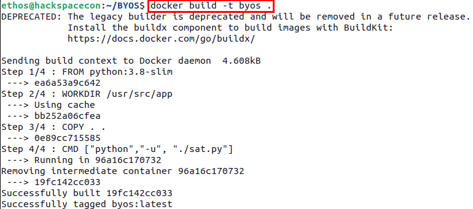
Once the build process has completed, you can deploy your freshly minted satellite using the following Docker command:
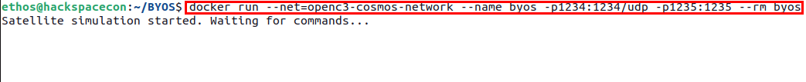
You should see a message stating that your satellite is waiting for commands as in the image above.
Congrats you deployed your virtual satellite but there is still work to be done.
Generate COSMOS Plugin.
In order to actually interact with your satellite, you need to create a plugin file that will allow COSMOS to talk to your virutal bird in the sky.
First, in new terminal window navigate to your cosmos directory that you previously used when deploying COSMOS.
Once in the cosmos directory, you will need to issue the following command to generate the plugin framework for your new plugin:
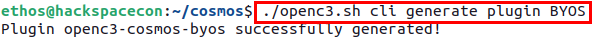
After successfully genertation of the plugin framework, you will need to move into the newly created directory use the command cd openc3-cosmos-byos.
Then, you can issue the following command to generate the targets structure needed, taking note of the two .. before the slash. These are needed because the script is up one directory from where you are currently.
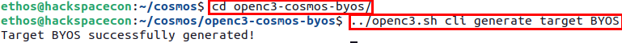
After the target has been generated, the next step is to edit the plugin.txt file using a text editor and adding the following content:
VARIABLE ip 127.0.0.1
VARIABLE port_tm 1234
VARIABLE port_tc 1235
VARIABLE byos_target_name BYOS
TARGET BYOS <%= byos_target_name %>
INTERFACE <%= byos_target_name %>_INT udp_interface.rb <%= ip %> <%= port_tc %> <%= port_tm %> nil nil 128 nil nil
MAP_TARGET <%= byos_target_name %>
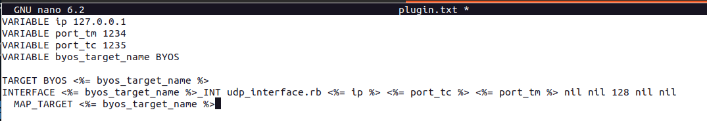
Next, you need to navigate into the targets directory to the cmd_tlm directory using the following command:
cmd.txt. Open this file in an editor, replace any content in the file with the following:
COMMAND BYOS PING BIG_ENDIAN "Ping Satellite"
APPEND_PARAMETER CMD_STRING 0 STRING "PING" "Ping Command"
COMMAND BYOS STATUS BIG_ENDIAN "Get Status"
APPEND_PARAMETER CMD_STRING 0 STRING "STATUS" "Command to Query Status"
COMMAND BYOS GET_TEMP BIG_ENDIAN "Get TEMP"
APPEND_PARAMETER CMD_STRING 0 STRING "GET_TEMP" "Command to Query Temp"
COMMAND BYOS SET_MODE BIG_ENDIAN "Set Satellite Mode"
APPEND_PARAMETER CMD_STRING 0 STRING "SET_MODE" "Command to Set Mode of Satellite"
COMMAND BYOS REBOOT BIG_ENDIAN "REBOOT Satellite"
APPEND_PARAMETER CMD_STRING 0 STRING "REBOOT" "Reboot Satellite"
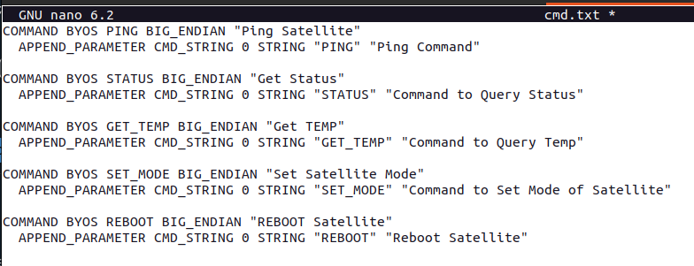
Save that file and then open the telemerty packet definition file tlm.txt and replace the contents of that file with the following:
TELEMETRY BYOS STAUS BIG_ENDIAN "STATUS PKT"
APPEND_ID_ITEM PACKET_ID 16 UINT 0x4320 "PACKET ID"
FORMAT_STRING "0X%04X"
APPEND_ITEM RESULT 96 STRING "RESPONSE"
TELEMETRY BYOS PING BIG_ENDIAN "PING PKT"
APPEND_ID_ITEM PACKET_ID 16 UINT 0x4321 "PACKET ID"
FORMAT_STRING "0X%04X"
APPEND_ITEM RESULT 96 STRING "RESPONSE"
TELEMETRY BYOS TEMP BIG_ENDIAN "TEMP PKT"
APPEND_ID_ITEM PACKET_ID 16 UINT 0x4322 "PACKET ID"
FORMAT_STRING "0X%04X"
APPEND_ITEM RESULT 96 STRING "RESPONSE"
TELEMETRY BYOS MODE BIG_ENDIAN "MODE PKT"
APPEND_ID_ITEM PACKET_ID 16 UINT 0x4323 "PACKET ID"
FORMAT_STRING "0X%04X"
APPEND_ITEM RESULT 96 STRING "RESPONSE"
TELEMETRY BYOS REBOOT BIG_ENDIAN "REBOOT PKT"
APPEND_ID_ITEM PACKET_ID 16 UINT 0x4324 "PACKET ID"
FORMAT_STRING "0X%04X"
APPEND_ITEM RESULT 96 STRING "RESPONSE"
TELEMETRY BYOS ERROR BIG_ENDIAN "ERROR PKT"
APPEND_ID_ITEM PACKET_ID 16 UINT 0x4325 "PACKET ID"
FORMAT_STRING "0X%04X"
APPEND_ITEM RESULT 96 STRING "RESPONSE"
```
<figure markdown>

<figcaption>Contents of tlm.txt in Nano</figcaption>
</figure>
Now that your packet definition files are done, the next step is to build the plugin. To do this, you need to navigate back a few direcrtories using the command ```cd ../../../``` and then issuing the following command to build your plugin file:
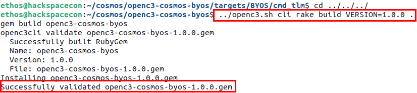
Lastly, before loading your new plugin into COSMOS, you need to first get the IP address of your satellite container using the command docker network inspect openc3-cosmos-network and looking for the entry for byos.
Now, go back to your browser and access the Admin Console within COSMOS to upload your new plugin file. CLick on the middle section where is says Click to select....
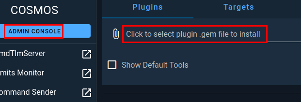
A file selection window will pop up and you then need to navigate the folder where your plugin was built, ~/cosmos/openc3-cosmos-byos and select your plugin file.
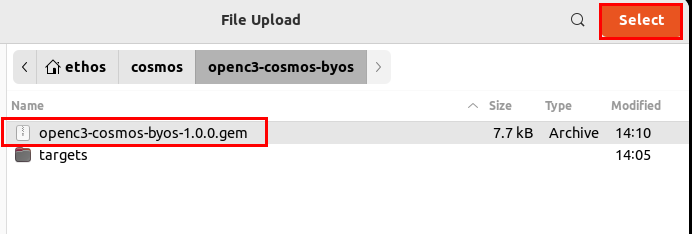
Once you click on Select you will be prompted to configure the plugin by providing the IP address of your satellite contianer, and then clicking install.
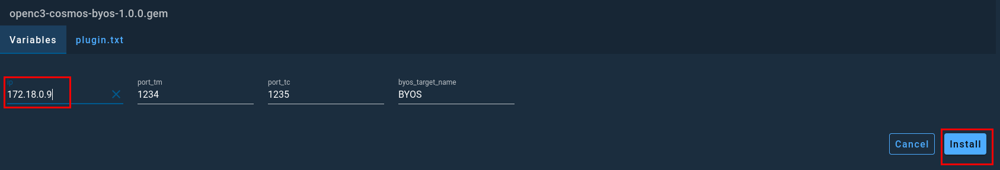
After COSMOS has completed configuring and installing the plugin, you can navigate over to the CmdTlmServer menu option to see that your interface is now connected within COSMOS.
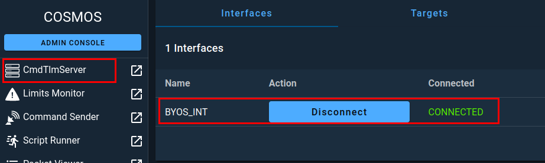
Next, in the left side menu, click on Command Sender and then make sure that BYOS is selected.
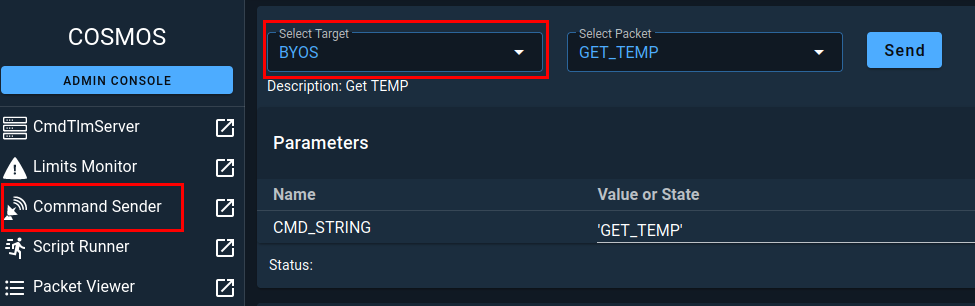
In the Select Packet field, select the PING packet and then click on Send.
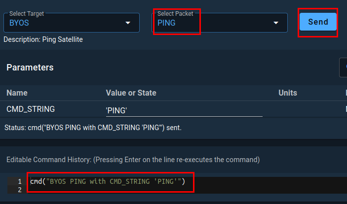
If you switch over to your terminal, running your satellite container, you should see that the it received the command and sent a response.
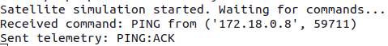
To confirm that COSMOS has received the telemetry packet sent by your satellite, you can click on Packet Viewer in the side menu, then select BYOS as the target if not already selected, then PING as the packet you wish to view.
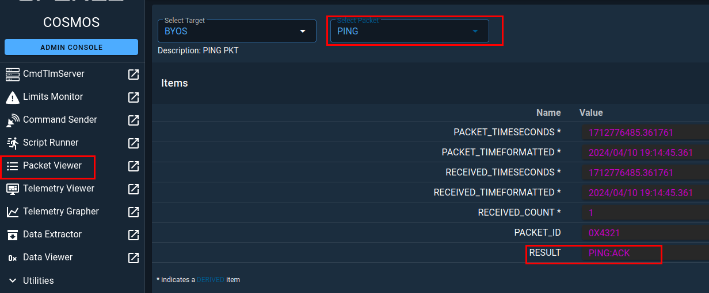
If everything worked as expected, you should see that there is a value in the RESULT field as shown in the previous image.
Congratulations, you have successfully built, deployed and intergrated a virtual satellite
Feel free to play with the other commands for a moment. Once done, you can remove the plugin from COSMOS using the Admin Console by clicking on the trashcan icon and then you can stop your virtual satellite by hitting crtl+c.